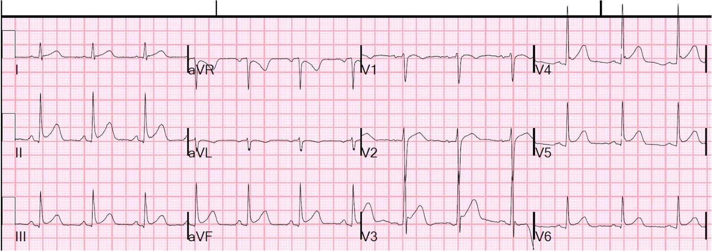
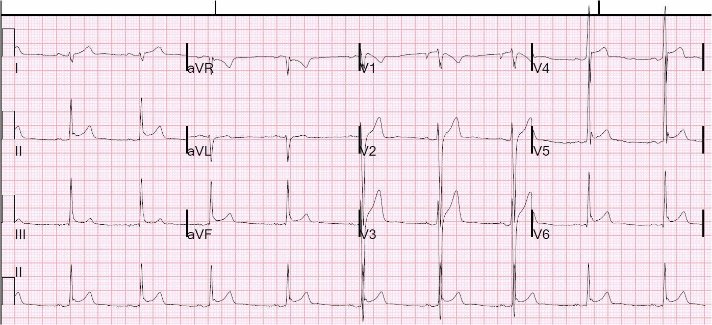
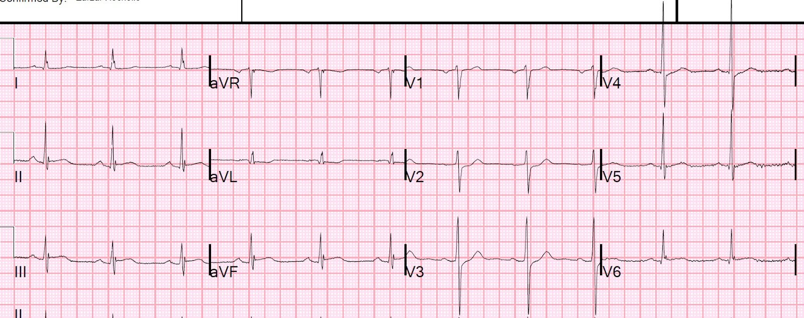
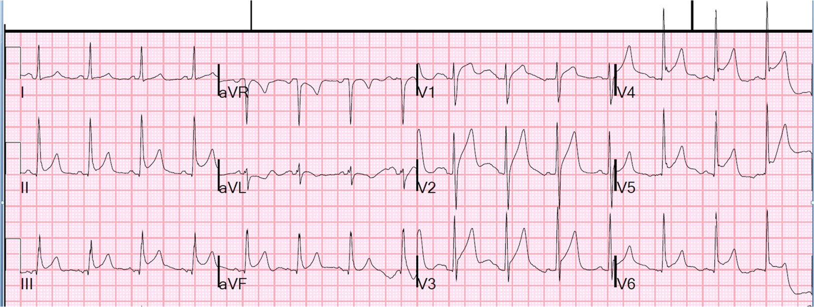
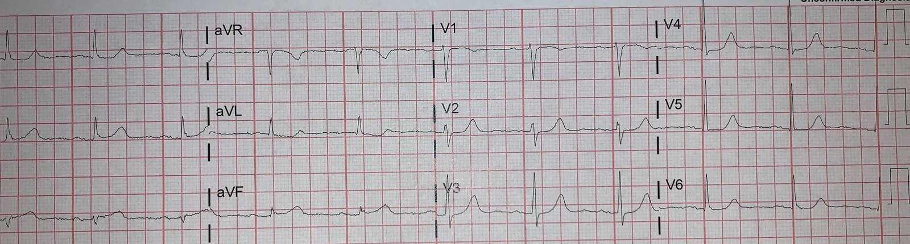
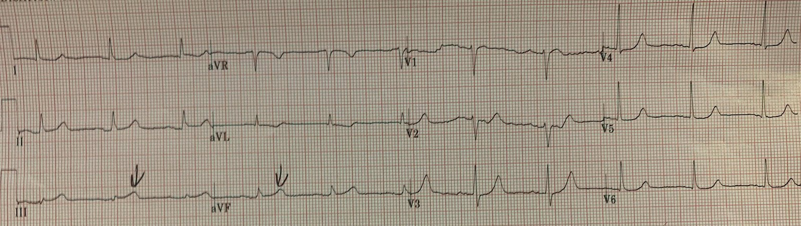
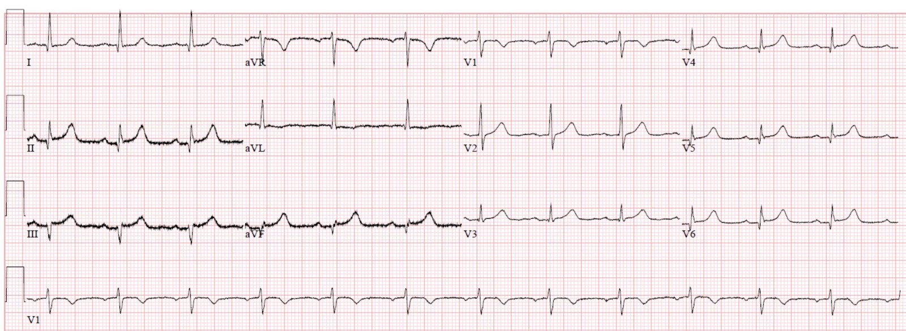
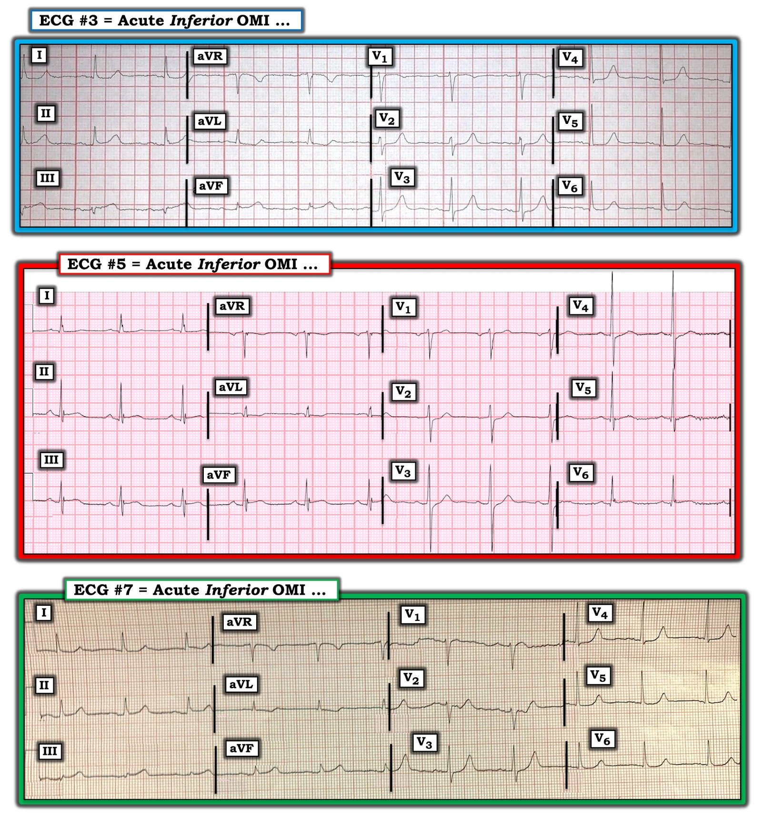

02/02/2020 — Tự kiểm tra: Trong 6 điện tâm đồ sau đây của các bệnh nhân đau ngực, điện tâm đồ nào biểu hiện OMI thành dưới?
Bản dịch tiếng Việt của bài "Test yourself: Which of the following 6 ECGs of patients with chest pain represent inferior OMI?" – Dr. Smith’s ECG Blog. Giữ nguyên toàn bộ 12 hình ảnh của bản gốc.
Trong 6 điện tâm đồ sau đây của các bệnh nhân đau ngực, điện tâm đồ nào biểu hiện OMI thành dưới?
Đáp án có thể là 1 hoặc nhiều hơn 1.
1.


2.

3.
4.


5.


6.


Đáp án:
3. và 5. là OMI thành dưới
1., 2., 4. và 6. là tái cực sớm ở các chuyển đạo chi
Liệu có thực sự phân biệt được các trường hợp này không?
Có. Pendell đã làm điều đó một cách dễ dàng, đúng 6/6.
Tôi đăng bài này vì vừa nhận được điện tâm đồ số 3 từ một học viên cũ. Điện tâm đồ này của một nam giới trung niên vốn khỏe mạnh, có 2 cơn đau thượng vị và đau ngực ngắn, ngắt quãng (stuttering) vào ngày hôm trước, rồi đến viện với cơn đau liên tục kéo dài 2 giờ.
Hãy xem lại điện tâm đồ này:


Đây là một điện tâm đồ khác của cùng bệnh nhân, ghi muộn hơn một chút, với các mũi tên chỉ ra những sóng T tối cấp:


Có ST chênh lên (STE) thành dưới rất ít, nhưng sóng T lại rất lớn so với QRS, có ST chênh xuống, rất ít, ở aVL, và cũng có một chút ST chênh xuống rất ít ở V4-V6.
Cựu bác sĩ nội trú này đã kích hoạt phòng thông tim (cath lab) dựa trên điện tâm đồ này và, dù bác sĩ can thiệp còn hoài nghi, ông ấy đã từng chứng kiến cựu nội trú này đưa ra một số quyết định rất chính xác trước đây nên đã đồng ý.
Có một tổn thương huyết khối hẹp 95% ở RCA và đã được đặt stent.
Cuối cùng, đây là một điện tâm đồ bổ sung mà tôi đã đăng lên Twitter và Facebook để giới thiệu bài viết:



===================================
BÌNH LUẬN CỦA TÔI, bởi KEN GRAUER, MD (1/2/2020):
===================================
Đây là một ca đầy thử thách. Trong đó, chúng ta được xem 7 bản ghi (6 bản ghi đầu được đánh số — bản ghi thứ 7 được Dr. Smith thêm vào cuối như một ví dụ sau cùng). Mỗi bệnh nhân này đều đến khoa cấp cứu (ED) vì đau ngực. Trong 7 bản ghi này — 3 biểu hiện OMI thành dưới cấp; 4 bản ghi còn lại thì không.
- CÂU HỎI #1: Những dấu hiệu điện tâm đồ nào là chung giữa 4 bản ghi không biểu hiện OMI thành dưới cấp?
- CÂU HỎI #2: Những dấu hiệu điện tâm đồ nào là chung giữa 3 bản ghi có biểu hiện nhồi máu cơ tim thành dưới cấp?
TRẢ LỜI: Tôi hoàn toàn thừa nhận rằng tôi đã không chắc chắn 4 bản ghi không phải OMI là do một biến thể tái cực (repolarization variant). Đặc biệt — điện tâm đồ #6 cho thấy ST chênh lên khá rõ rệt ở nhiều chuyển đạo.
- Chúng ta không được biết chi tiết bệnh sử của bất kỳ ca nào trong số này — ngoài việc biết rằng các bệnh nhân này đến khoa cấp cứu vì đau ngực.
- Đôi khi, đơn giản là không thể chắc chắn 100% từ một điện tâm đồ duy nhất rằng nó có biểu hiện OMI cấp hay không.
- NẾU bối cảnh lâm sàng của cơn “đau ngực” là “phù hợp” — thì các chẩn đoán khác (tức là viêm cơ-màng ngoài tim cấp) có thể được đặt ra — và viêm cơ tim cấp có thể biểu hiện với hình ảnh điện tâm đồ gần như giống hệt OMI cấp.
Dù đã nói như trên — mỗi bản ghi trong 4 bản ghi không biểu hiện OMI thành dưới cấp ( = điện tâm đồ #1, 2, 4, 6) đều có chung các dấu hiệu điện tâm đồ sau:
- Chúng thiếu mối quan hệ soi gương (reciprocal) của sóng ST–T dạng hình phản chiếu “kỳ diệu” thường thấy giữa chuyển đạo III và chuyển đạo aVL trong OMI thành dưới cấp (Xem Bình luận của tôi trong bài 9/8/2018 và trong bài 6/10/2018 trên Dr. Smith’s ECG Blog, cùng rất nhiều lần khác chúng tôi đã nhấn mạnh dấu hiệu này!).
- Chuyển đạo V2 và V3 hoàn toàn không gợi ý tổn thương thành sau cấp.
- Hình dạng của ST chênh lên là dốc lên.
- Có khía điểm J (J-point notching) hoặc trát đậm điểm J ở ít nhất một vài chuyển đạo.
- QTc tương đối ngắn.
- Không có sóng Q lớn.
- Ngay cả khi ST-T chênh lên khá rõ — nó không khu trú ở các chuyển đạo thành dưới trong 4 bản ghi không biểu hiện OMI thành dưới cấp này.
- MẤU CHỐT: Không dấu hiệu điện tâm đồ nào trong 7 gạch đầu dòng trên là tuyệt đối. Tuy vậy — các điểm được mô tả trong 7 gạch đầu dòng này làm nổi bật những dấu hiệu điện tâm đồ mà chúng ta tìm kiếm khi cố gắng phân biệt giữa các biến thể tái cực với OMI thành dưới cấp.
THẾ CÒN 3 bản ghi THỰC SỰ biểu hiện OMI thành dưới cấp thì sao? Để cho rõ ràng — tôi trình bày lại 3 bản ghi này trong Hình 1.
- 3 ví dụ OMI thành dưới cấp này có chung những dấu hiệu điện tâm đồ nào?
- GỢI Ý: Cùng 6 chuyển đạo MẤU CHỐT trong mỗi bản ghi của 3 bản ghi này cho thấy những dấu hiệu bất thường tương tự!


Mỗi bản ghi trong 3 bản ghi có biểu hiện OMI thành dưới cấp ( = điện tâm đồ #3, 5, 7) đều có chung các dấu hiệu điện tâm đồ sau:
- Sóng ST-T bất thường ở mỗi chuyển đạo trong 3 chuyển đạo thành dưới. Cần lưu ý rằng nhồi máu cơ tim thành dưới đôi khi khá kín đáo — một đặc điểm càng rõ hơn ở điện tâm đồ #3 và điện tâm đồ #7, trong đó biên độ QRS ở các chuyển đạo thành dưới khá khiêm tốn. Khi phức bộ QRS rất nhỏ (như ở chuyển đạo III và aVF trong điện tâm đồ #3 và 7) — thì “lượng” ST chênh lên sẽ không lớn. Đây là lý do — HÌNH DẠNG quan trọng hơn lượng chênh!
- Xem kỹ hơn — sóng ST-T rõ ràng là tối cấp ở các chuyển đạo II, III và aVF trong điện tâm đồ #3 — và ở các chuyển đạo III và aVF trong điện tâm đồ #7. Ý tôi là khi xét đến biên độ QRS — sóng T ở các chuyển đạo này cao-hơn-mức-đáng-có và to-ở-đỉnh với đáy rộng-hơn-dự-kiến.
- Phải thừa nhận rằng — sóng ST-T trong điện tâm đồ #5 trông không đáng lo ngại bằng ở điện tâm đồ #3 và #7. Dù vậy — có ST chênh lên ở mỗi chuyển đạo trong 3 chuyển đạo thành dưới ở điện tâm đồ #5 — và có những dấu hiệu rõ ràng đáng lo ngại khác trên bản ghi này.
- Hình ảnh đoạn ST đối nghịch dạng hình phản chiếu “kỳ diệu” có xuất hiện giữa chuyển đạo III và aVL ở cả 3 bản ghi có OMI thành dưới cấp ( = điện tâm đồ #3, 5 và 7). Điều này đúng ngay cả ở điện tâm đồ #5 — trong đó đoạn ST chênh xuống nông-nhưng-có-thật ở chuyển đạo aVL chính là hình phản chiếu đối nghịch của ST chênh lên kín-đáo-nhưng-có-thật ở chuyển đạo III.
- Cuối cùng — chuyển đạo V2 và V3 ở mỗi bản ghi trong 3 bản ghi có OMI thành dưới cấp trong Hình 1 đều cho thấy những bất thường rõ ràng, gợi ý mạnh mẽ có kèm tổn thương thành sau cấp. Dù kín đáo — có điểm J chênh xuống nhẹ-nhưng-có-thật (hoặc ít nhất là đoạn ST dẹt) ở mỗi chuyển đạo này, trong khi bình thường phải có ST chênh lên nhẹ, dốc-lên-thoai-thoải. Ngoài ra, sóng T ở chuyển đạo V2 và V3 trong cả điện tâm đồ #3 và điện tâm đồ #5 trông tối cấp. Sau cùng — phức bộ QRS ở chuyển đạo V3 trong mỗi bản ghi của 3 bản ghi này cho thấy một sóng R cao-hơn-dự-kiến, đây là một dấu hiệu khác phù hợp với nhồi máu thành sau (BẤM VÀO ĐÂY — để xem minh họa cho khái niệm này).
ĐIỀU CỐT LÕI: Khi xem xét để xác định LIỆU có OMI thành dưới cấp hay không — 6 chuyển đạo MẤU CHỐT mà tôi tập trung vào là 3 chuyển đạo thành dưới ( = chuyển đạo II, III và aVF) — chuyển đạo aVL (tìm ST-T chênh xuống soi gương, là hình phản chiếu đối nghịch của những gì ta thấy ở chuyển đạo III) — và các chuyển đạo trước tim V2 và V3 (tìm dấu hiệu gợi ý tổn thương thành sau cấp).
- Mỗi bản ghi trong 3 bản ghi ở Hình 1 đều cho thấy các dấu hiệu bất thường ở mỗi chuyển đạo trong 6 chuyển đạo MẤU CHỐT này.
- Các dấu hiệu bất thường (kín đáo hơn) cũng có ở một số chuyển đạo khác — nhưng chính 6 chuyển đạo MẤU CHỐT mới cung cấp thông tin quan trọng nhất khi xem xét để xác định LIỆU có OMI thành dưới cấp hay không.
- Càng nhiều chuyển đạo bất thường rõ ràng — thì khả năng một bệnh nhân đau ngực đang có một biến cố tim cấp đang diễn ra càng lớn. Ngoại trừ chuyển đạo aVR và V1 — gần như tất cả 10 chuyển đạo còn lại ở mỗi bản ghi trong 3 bản ghi ở Hình 1 đều cho thấy ít nhất sóng ST-T dẹt, thẳng đuỗn hoặc chênh xuống nhẹ — và một số chuyển đạo khác trong số này còn biểu hiện sóng T tối cấp.
Chúng tôi xin CẢM ƠN Dr. Smith đã đăng ca bệnh minh họa này!